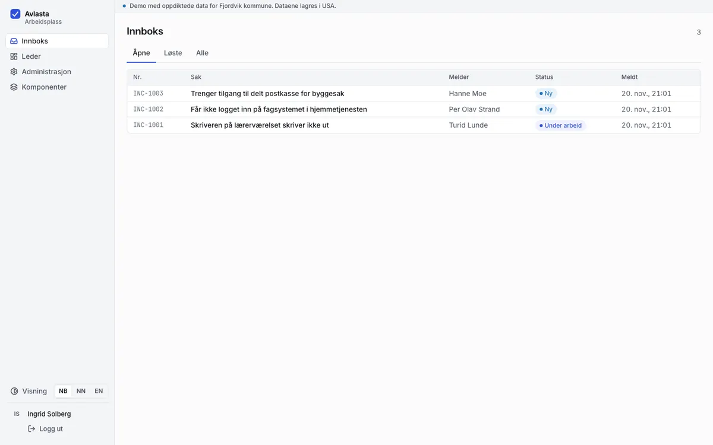

Slik verkar Avlasta
Ein tilsett melder ei sak, servicedesken løyser ho, og alle ser kvar saka står. Her er det som verkar i demoen i dag, og det som kjem etter kvart.
Ei sak frå start til slutt, slik ho verkar i demoen i dag
Alt under kan du gjere sjølv i demoen. Fjordvik kommune og personane er oppdikta.
Den tilsette melder saka
I portalen skriv ho kva det gjeld og kva som skjedde. Det tek under eitt minutt, også på mobilen.
Saksnummer med ein gong
Ho får ei kvittering med saksnummer, som ho kan vise til viss ho vil spørje om saka.
Saka ligg i innboksen
Sakshandsamaren ser nye saker øvst, med melder, status og når saka kom inn.
Svar og løys
Sakshandsamaren svarar melderen eller skriv eit internt notat, og markerer saka som løyst.



Kva som finst, og kva som kjem
Vi lovar berre det som er bygt. Det som er merkt «Kjem», er planlagt, men ikkje i demoen enno.
- Melde sak i portalenI demoen no
Tilsette melder saka frå mobil eller PC med ei kort skildring, får saksnummer med ein gong og følgjer saka under «Mine saker».
- Svar før saka blir sendI demoen no
Portalen viser vanlege svar frå kunnskapsbasen og kjende feil før den tilsette sender saka.
- Innboks og saksbileteI demoen no
Sakshandsamaren ser nye, eigne og ventande saker med frist, svarar melderen eller skriv internt notat, og løyser saka.
- E-post inn og utI demoen no
Ein e-post blir sak på sekund, og svara går ut som e-post. I demoen går alt til ein demopostkasse, så ingen e-post blir send ut.
- Framlegg frå AII demoen no
Framlegg til kvar saka skal sorterast, med «Kvifor». Språkmodellen Claude lagar framlegget når AI svarar, elles faste reglar, og merket seier kva for ein. Sakshandsamaren brukar eller avviser. Oppsummering og svarutkast er bygde og kjem i demoen.
- Rapportar til leiingaI demoen no
Leiarflata viser saker inn og løyste, fristar, opne saker per kø og ein vekerapport.
- Bokmål, nynorsk og engelskI demoen no
Portalen og arbeidsplassen kan brukast på alle tre språka.
- VerdirekneskapDelvis
Leiarflata viser kor mykje av sakene Avlasta kunne ha teke. Kor mykje tid systemet faktisk tok unna, kjem.
- AI som utfører vanlege oppgåverKjem
Til dømes tilgang og passord. Du ser kva som vil skje før noko skjer, og kan angre etterpå.
- Fleire kommunar i éi løysingKjem
Eigen portal, eigne fristar og eigen rapport per kommune, med felles køar.
Slik brukar Avlasta AI
AI er slått på i demoen. Språkmodellen Claude frå Anthropic føreslår kvar saka skal sorterast. Svarar ikkje språkmodellen, lagar faste reglar framlegget, og merket seier kva for ein. Dette er reglane vi byggjer etter.
Framlegg med kjelde
AI føreslår, sakshandsamaren bestemmer. Kvart framlegg viser kva det byggjer på.
Sjå før det skjer
Det som endrar noko, blir først vist som ei førehandsvising. Etterpå kan det angrast.
Alt blir logga
Alt AI har gjort, står i ein logg verksemda kan lese.
De bestemmer
AI kan slåast av, funksjon for funksjon. Avlasta verkar utan.
AI er inkludert i prisen, utan målar og utan ekstra faktura. AI skal ikkje brukast til å vurdere, rangere eller profilere tilsette.
Slik prøver du demoen
- Opne demoen, vel nynorsk og vel «Tilsett som treng hjelp». Skildre ei sak i portalen. Før du sender, ser du vanlege svar og kjende feil.
- Gå tilbake og vel «Sakshandsamar i servicedesken». Då er du Sara i første line. Finn saka di i innboksen, sjå om det står eit framlegg til sortering, svar og løys saka.
- Vil du prøve e-post, opne «Om demoen» og vel «Send ein test-e-post». E-posten blir ei sak, og svaret kjem tilbake til demopostkassen.
- Vel «Leiar» for å sjå tala for veka, eller «Start rettleidd tur» for ein tur på tre minutt.
Ikkje skriv ekte personopplysningar i demoen. Det du skriv, kan bli sett av andre. Steg for steg står i hjelpesenteret (på bokmål).